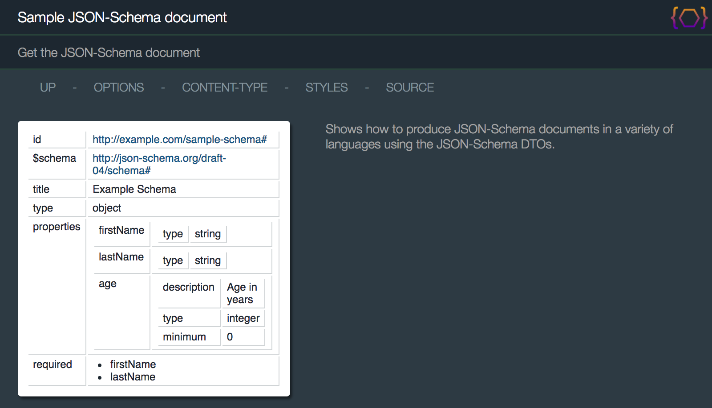

JsonSchemaResource
The JsonSchemaResource class shows examples of the following:
-
Using the {@link oaj.dto.jsonschema JSON Schema DTO} API.
The resource consists of a pre-initialized {@link oaj.dto.jsonschema.JsonSchema} object.
Pointing a browser to the resource shows the following:
http://localhost:10000/jsonSchema

For true JSON-Schema, you need to specify the header Accept: text/json:
http://localhost:10000/jsonSchema?Accept=text/json&plainText=true

/**
* Sample resource that shows how to serialize JSON-Schema documents.
*/
@RestResource(
path="/jsonSchema",
messages="nls/JsonSchemaResource",
title="Sample JSON-Schema document",
description="Sample resource that shows how to generate JSON-Schema documents",
htmldoc=@HtmlDoc(
widgets={
ContentTypeMenuItem.class,
StyleMenuItem.class
},
navlinks={
"up: request:/..",
"options: servlet:/?method=OPTIONS",
"$W{ContentTypeMenuItem}",
"$W{StyleMenuItem}",
"source: $C{Source/gitHub}/org/apache/juneau/examples/rest/$R{servletClassSimple}.java"
},
aside={
"<div style='min-width:200px' class='text'>",
" <p>Shows how to produce JSON-Schema documents in a variety of languages using the JSON-Schema DTOs.</p>",
"</div>"
}
)
)
public class JsonSchemaResource extends BasicRestServletJena {
private static final long serialVersionUID = 1L;
private JsonSchema schema; // The schema document
@Override /* Servlet */
public void init() {
try {
schema = new JsonSchema()
.setId("http://example.com/sample-schema#")
.setSchemaVersionUri("http://json-schema.org/draft-04/schema#")
.setTitle("Example Schema")
.setType(JsonType.OBJECT)
.addProperties(
new JsonSchemaProperty("firstName", JsonType.STRING),
new JsonSchemaProperty("lastName", JsonType.STRING),
new JsonSchemaProperty("age", JsonType.INTEGER)
.setDescription("Age in years")
.setMinimum(0)
)
.addRequired("firstName", "lastName");
} catch (Exception e) {
throw new RuntimeException(e);
}
}
/** GET request handler */
@RestMethod(name=GET, path="/")
public JsonSchema getSchema() throws Exception {
return schema;
}
/**
* PUT request handler.
* Replaces the schema document with the specified content, and then mirrors it as the response.
*/
@RestMethod(name=PUT, path="/")
public JsonSchema setSchema(@Body JsonSchema schema) throws Exception {
this.schema = schema;
return schema;
}
}